Wine seminars go flying: a mini symposium on drones in plant and forest sciences
Today's program 14.00-16.00
- Jon Atherton
Why drones are here to stay: the scale niche - Vicent Agustí Ribas Costa
UAS-based spherical (360) photography: description of the forest canopy from the inside out - Samuli Junttila
Drones in teaching and tree health monitoring - Pavel Alekseychik
New approaches to UAS thermal imaging in boreal ecosystems - Mikael Änäkkälä
The effect of different conditions on multispectral images taken with a drone - Panel Q&A
Why drones are here to stay: the scale niche
12.03.2021
jon.atherton@helsinki.fi

"our ability to generate observations from remote sensing data at scales clearly aligned with biological processes has been limited. The problem is that biological processes like natural selection, metabolism, and resource allocation vary within and among individuals and change on scales of space and time"
Kellner et al., 2019, The case for remote sensing of individual plants, AmJ Botany
https://doi.org/10.1002/ajb2.1347Two example applications at this new scale
Leaf angles from SfM (data collected by FGI)
Xu et al., 2020, IGARSS
10.1109/IGARSS39084.2020.9323498Atherton et al., 2020, EarthArxiv
https://doi.org/10.31223/osf.io/eayphAcknowledgements
Anu Riikonen, Chao Zhang, Jaakko Oivukkamäki, Alasdair MacArthur, Eija Honkavaara, Teemu Hakala, Niko Koivumäki, Albert Porcar-Castell